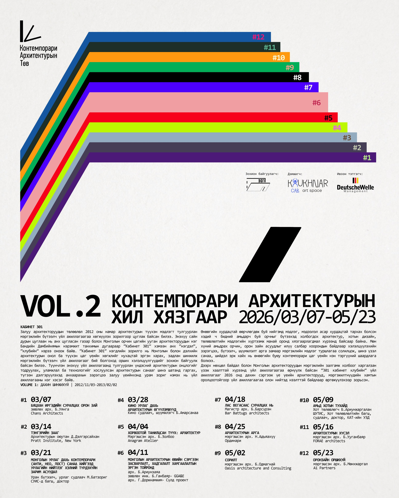

Удахгүй мэдээлэл орно.
Удахгүй мэдээлэл орно.
Энэхүү төсөл нь зөвхөн барилгын шийдэл бус, Монгол улсын үе үеийн залуучуудын төсөөлөл, шинжлэх ухаан, мэдээллийн технологийн мэдлэг хуримтлагдсан орчныг шинэ түвшинд хүргэх оролдлого юм. “Цуглах, холбогдох, хамтдаа хөгжих” үзэл санаанд тулгуурлан Park-ийн орон зайг амрах, уулзах, санал солилцох, мөн архитектурын үнэ цэнийг мэдрэх нээлттэй орчин болгон төлөвлөсөн. Анхны төлөвлөлтийн үзэл баримтлалыг дахин идэвхжүүлэх зорилгоор парк-н орон зайг нээн мөн тойрсон алхалтын зам /Promenade/-ыг шийдсэн. Энэхүү орон зай нь нийтийн болон хувийн бүсүүдийг тасралтгүй уялдуулж, дотор ба гадаад орчныг нэгдмэл урсгалд холбон, цуглах ба хамтрах боломжийг бүрдүүлнэ.
Энэхүү төсөл нь 130мx18м урттай үндсэн 3 блок, холбох блок, дулаан зогсоолын 2 блокоос бүрдэнэ. Хотоос ирэх зочдыг амрах орон зайд шилжүүлэх үүднээс зогсоолын орон зайг амрах орон зайнаас салгаж төлөвлөсөн ба амрах, зугаалах, гүйлтийн зам, сагсан бөмбөг, теннисийн талбайг автозам, зогсоолоос тусдаа түвшинд шийдэж өгсөн. Цоолбортой металл фасадын хавтан нь гаднаасаа үргэлжилсэн урт цагаан цул харагдах бол дотор орон зайд нарны гэрэл бууруулах, нууцлалтай байдлыг ихэсгэх байдлаар төлөвлөгдсөн. Зогсоолын гэгээвчээр эхний вэлком байгалийн гэрлийг авах бол үндсэн барилгын дээврийн гэгээвчээр орж ирэх байгалийн гэрэл нь төслийг бусад төслөөс ялгарах байдлыг илэрхийлнэ.
Энэхүү төсөл нь 130мx18м урттай үндсэн 3 блок, холбох блок, дулаан зогсоолын 2 блокоос бүрдэнэ. Хотоос ирэх зочдыг амрах орон зайд шилжүүлэх үүднээс зогсоолын орон зайг амрах орон зайнаас салгаж төлөвлөсөн ба амрах, зугаалах, гүйлтийн зам, сагсан бөмбөг, теннисийн талбайг автозам, зогсоолоос тусдаа түвшинд шийдэж өгсөн. Цоолбортой металл фасадын хавтан нь гаднаасаа үргэлжилсэн урт цагаан цул харагдах бол дотор орон зайд нарны гэрэл бууруулах, нууцлалтай байдлыг ихэсгэх байдлаар төлөвлөгдсөн. Зогсоолын гэгээвчээр эхний вэлком байгалийн гэрлийг авах бол үндсэн барилгын дээврийн гэгээвчээр орж ирэх байгалийн гэрэл нь төслийг бусад төслөөс ялгарах байдлыг илэрхийлнэ.
Удахгүй.
Удахгүй.
VOLUME 2: КОНТЕМПОРАРИ АРХИТЕКТУРЫН ХИЛ ХЯЗГААР хүрээнд Архитектурын хүсэл сэдвээр илтгэл тавив.

Мэдээллийн технологийн үндэсний паркаас (МТҮП) санаачлан зохион байгуулсан Хойд жигүүрийн дахин төлөвлөлтийн интерьер зураг төслийн уралдаанд 1-р байр эзэллээ.
Эх сурвалж ↗Hanyang University, School of Architecture-д архитектор мэргэжил эзэмшсэн төгсөөд Сөүл хотын Haenglim Architects & Engineers Co., Ltd.-д, мөн Улаанбаатар хотын Project Planner LLC-д тус тус мэргэжлийн туршлага хуримтлуулсан. 2026 оноос FORAE ARCHITECTS LLC-ийг үүсгэн байгуулав.
1. Агуулга, шинж чанар, материал нь хэлбэрээ тодорхойлно. Нэг төвлөрсөн үзэл санаагаар хийгдээгүй, үзэл санаа тухайн зүйлийнхээ бүх хэсэгт шингээгүй байх юм бол юу ч тийм сайхан, төгс байж чадахгүй.
2. PM: архитектороор ажиллахад, өөрөөсөө миний дотоод ертөнц хаана оршиж байгааг асуудаг. Архитектор нь ирээдүйд амьдрах юм уу (ирээдүйн орон зайн төлөвлөлтүүд), өөр өөрийгөө бүрдүүлсэн өнгөрсөнтэйгөө хамт амьдардаг.
3. Архитектурт байдаг өвөрмөц шинж агуулгаас улбаатай хэлбэрийг нээн, өөр юунд ч үл хүрэх бүтээлч хэлбэрийг эрэлхийлэн олох нь чухал.
4. Амьд нам гүмийг олоогүй хот нь сүйрлийн замаар нам гүм байдлыг олдог.
5. План нь дотроос гадагшаа өрнөнө. Гадна тал нь дотор талын хариу юм. Архитектурын элемент нь гэрэл болон сүүдэр, хана болон орон зай. Тэдгээрийг байрлуулах нь гол зорилгын дэс дараа бөгөөд зорьж буй цаад санааны ангилал юм. Хын төрөлхтөн нь газрын гадаргуугаас 1 метр 70 см зайд буй өөрийн нүдээр архитектурын бүтээлийг харна. Нүдээр ойртон халдаж чадах ба архитектурын хэсгүүдийг авч үзэх зорилтыг л өмнөө тавина. Хэрвээ архитектурын хэлээр хэлж болохооргүй санаа мэдрэгдэх юм бол планы хуурмаг байдалд автах ба санааны хүрээнд эндүүрлээс бардамнал хооронд төөрөгдөж планы дүрмээс гажихад хүрнэ.
6. Архитекторууд нь анхандаа өөрийн сэдлийн үр дүн байсан боловч одоо зайлшгүй хэм хэмжээний агуулгад баттай баригдаж дахин түүнийхээ хэрэгсэл болжээ.
7. Хүн бол адгуус амьтан, ер бусын хүн хоёрын хооронд, ангал дээр татсан олс юм... Би амь үрэгдэхээс өөрөөр амьдарч чаддаггүй хүмүүст хайртай. Учир нь тэд гүүрээр гарч байна.
8. Big alone is not bad, ugly is bad, badly proportioned is bad.
9. Бүтээл /작품/ Бүтээхийн 작 ба юм гэдгийн 품. 작 гэдэг нь гарт баригддаг зүйл биш, толгой доторх туурвил, спирит, дур хүсэл юм уу өөрийн зураг зурах уг шалтгаан ийм зүйл нь “작”. 품 гэх нь бодитоор зураг зурж буй бодит цаг дор бодит материаллаг зүйл, эцэст нь үлдэх зүйл, эдгээр нь нэгдэж байж бүтээл бөгөөд 작 ба 품 гэх хэсэгүүдийг авч үзвэл 5:5 гэвэл бас үгүй 8:2-оор 작 нь цойлох хэрэгтэй.
10. Үзэгчдийг бас голмоор юм байна. Үзэгчийн төвшин гэж юм байна даа, тэр төвшингийн асуудал.
11. Сэдвийг нүүрс шиг залгиж Сэрэхүйн зууханд шатааж шинийг сүлэх Шүүдэр тоолон гэгээ цацах Би нүүдлийн цахилгаан станц
12. Хэт диатоник хэмнэл, хүчтэй, гайхалтай хэмнэл, уянгалаг тод байдал, энгийн бөгөөд ямар ч хольцгүй зохицол, хурц тод өнго, хөгжмийн энгийн бөгөөд ил тод байдал, албан ёсны бүтцийн тогтвортой байдал.
13. Гоо үзэсгэлэн нь уур амьсгалд байна.
14. Захиалагчыг итгүүлэхийн өмнө өөрийгөө ятгах хэрэгтэй. Өөрийгөө өөртөө ятгаж чадах юм бол үлдсэн процесс нь маш амархан үргэлжлэнэ. Сайн төлөвлөлт нь заримдаа нарийн төвөгтэй байдлаас улбаалж илүү сонирхолтой болдог. Учир нь олон төрлийн өнцгөөс асуулт асууж болохоор төвшинд хүрнэ.
15. Нарийн төвөгтэй сэтгэлгээний энгийн илэрхийлэл.
16. Декартын эргэлзэж чаддаггүй ганц зүйл бол өөрийнх нь оршиж буй явдал. Хэрэв тэр эргэлзэж байгаа юм бол чухамхүү тэр л эргэлзэж байгаа хэрэг. Тэгэхээр тэр оршин байна гэсэн үг. 'Би сэтгэж байна, тийм учраас оршин байна'
17. Өөрсдөдөө заяагдсан зүй ёсны үнэт зүйлсээ бусдад булаалгачихсан атлаа харамссан ч үгүй, уурласан ч үгүй, буруу зүйлд бууж өгсөн хэр нь бас ичсэн ч үгүй.
18. Үргэлж нүүдэллэж байдаг нүүдэлчид нь газар биш 'цаг хугацааг' санадаг, хүүхдүүд төрсөн ч ямар улиралд төрснөөр санадаг.
19. Уран бүтээл бол юуны өмнө сэтгэл хөдлөл юм.
20. Урлагийн бүтээл бол эцэс хязгааргүй зүйл. Түүний дотор хорвоо тэр чигээрээ багтана.
21. ...Тэд нар өвдөлт юм уу хэцүү үеийг туулаагүй. Өвдөлтгүйгээр урлаг нь бүтээгддэггүй. Урлаг нь амьдарч, амьсгалж буй сэтгэлийн орилоон юм. Тэд нар өөрсдөө сэтгэл зүрх тээж яваа гэдгээ хүртэл мэдэхгүйн улмаас тэдний сэтгэл нь эцэстээ амьд биш юм.
22. Хүч чадал, эмзэг байдал нь Серрагийн бүтээлүүдийн гол цөм юм. Тэд салхи, элс, наранд шаналж, тэнгэр өөд бардам гарна. Дараа нь ган нь гандах хүртлээ тасралтгүй хувьслын явцад алхимийн зотон шиг шар, улаан, улбар шар, хүрэн, хув зэрэг өнгийг авдаг.... "Би уран баримлын объектуудыг орон зайд байрлуулахыг хүсэхгүй, харин бүхэл бүтэн орон зайг уран баримал болгохыг хүсч байна."
23. Уран бүтээлчийг бүтээлээс нь салган ойлгох гэсэн оролдлого нь улирсан үзэл юм. Түүний бүтээлүүдэд нэгэн түгээмэл чанар харагдана. Түүний бүх бүтээлүүдэд тэр өөрөө харагдана. Цаг хугацаа зогссон мэт, эсвэл цаг өөрөө түр зуур амсхийж буй мэт. Уран бүтээлчийн өөртөө үнэнч байдлыг та Репиний Дүрслэх Урлагийн Академи төгссөнөөс хойших (1984) бүтээлүүдийн өнгө аясаас нь харж болно. Бүтээлийн сэдэв нь өргөн, ямар нэг үзэл суртал, урсгал чиглэлд үл хамаарсан, тухайн цаг хугацааны бүтээгдэхүүн гэхээсээ илүү тухайн бие хүний дотоод сэтгэлийн тусгал илүү харагдана. Дан ялангуяа, түүх, нийгэм, ёс заншлын нөлөө урлагт нь маш их нөлөөлдөг Монгол орны хувьд, бие хүнээ хамгаалан орших нь асар төвөгтэй үйлдэл юм. Зарим уран бүтээлчид нийгэмтэйгээ илээр тэрсэлдэн амьдардаг бол, түүний хувьд бараг нуугдмал гэмээр хэлбэрээр бүтээлээ туурвиж иржээ. Социализмын үед төрөн, өсөж, нийгмийн ташуурсан үзэл суртал ямар үр дагавартай байдгийг биеэр үзсэн болохоор тэр биз. Тэр нийгмийн нэг хэсэг боловч, нийгмээс гадуур орших мэт. Уран бүтээлч бүрийн амьдралдаа, бүтээл туурвилдаа хандах хандлага нь өөр. Тиймээс, түүнийг танихын тулд, та бүтээлийг нь хар. Ойлгох гээд үз. Юу бодож, юу сэтгэж ингэж бүтээсэн юм бол гэж өөрөөсөө асуу. 20-р зууны сүүл үе, 21-р зууны эхэн үеийн дүрслэх урлагийн мөн чанар бол сэтгэлгээ голлосон эсвэл давамгайлсан байдал билээ. Бидний үеийн залуу уран бүтээлчдэд дутагддаг нэг тал бол сэтгэлгээ нь байсан ч, тэр концепцоо бүтээлдээ бүрэн дүүрэн буулгаж чадахгүй байгаа явдал юм. Энэ талаа далдлахын тулд, Барууны бүтээлүүдээс хуулбарлан нь шинэ-ийг бүтээх хүсэлд автан, сонин содон хэлбэртэй харагдаж л байвал зорилгодоо хүрэх юм шиг ойлгоод байдаг... Америкийн алдарт уран бүтээлч Жеоржиа О'Кийф (1887–1986): Урлагт өөрийн гэсэн ертөнцийг бүтээхэд зориг шаардлагатай гэж нэгэнтээ хэлж байжээ. Өөрийнхөөрөө бүтээлээ туурвих ямар түвэгтэй гэдгийг ганцхан уран бүтээлч хүн биш, хүн бүр ойлгох боломжтой гэж би бодож байна. Өөрийнхөөрөө байх нь зөвхөн урлагийн хүмүүст биш орчин цагийн хүмүүст тулгараад байгаа сэтгэлзүйн томоохон асуудлуудын нэг юм.
24. It is a little fatalistic on my part, but I always took the position: You cannot ask a very good architect to build a building and then tell him what to do. If you want to dictate how a house should be like, get a mediocre architect. Энэ нь миний хувьд бага зэрэг хор хөнөөлтэй, гэхдээ би үргэлж ийм байр суурийг баримталдаг: Та маш сайн архитектороос барилга барихыг гуйж, дараа нь түүнд юу хийхийг хэлж болохгүй. Хэрэв та байшин ямар байх ёстойг зааж өгөхийг хүсч байвал дунд зэргийн архитектор аваарай.
25. 설계한 건물에서 특정 소재의 특정한 의미를 성공적으로 도출했을 때, 감각이 포출된다. Төлөвлөн барилгын тухайлсан материалын тухайлсан утгыг амжилттайгаар олборлох үед, мэдрэмж илэрдэг.
26. “A great building must begin with the immeasurable, must go through measurable means when it is being designed, and in the end must be unmeasured.” Агуу барилга нь хэмжээлшгүй зүйлээс эхэлж хэмжигдэхүйц арга хэрэгслээр дамжин бий болж эцэст нь хэмжигдэхүүнгүй болох ёстой.
27. Chandigarh is a great experiment in India. I do not like every building in Chandigarh. I like some of them very much. I like the general conception of the township very much but, above all, I like the creative approach, thinking in new terms, of light and air and ground and water and human beings. Чандигарх бол Энэтхэгт хийсэн гайхалтай туршилт юм. Би Чандигарх дахь барилга болгонд дургүй. Тэдний зарим нь надад маш их таалагддаг. Хотхоны тухай ерөнхий ойлголт надад маш их таалагддаг ч хамгийн гол нь гэрэл, агаар, газар, ус, хүний тухай шинэлэг ойлголтоор сэтгэх бүтээлч хандлага надад таалагддаг.
28. - I'm here to stop your heart! I'm not here to make pretty pictures! - Би чиний зүрхийг зогсоохоор ирсэн! Би гоё зураг хийх гэж ирээгүй!
1. The Fountainhead — Novel by Ayn Rand
2. Architecture Dialogues: Positions–Concepts–Vision — Marc Angélil, Jørg Himmelreich
3. Архитектор Буджавын Чимэд — Дашийн Бат, Гүндэвийн Туяа
4. Max Picard
5. Vers une architecture — Le Corbusier
6. Sobre el concept de arbitrariedad en arquitectura — Rafael Moneo
7. Thus Spoke Zarathustra: A Book for All and None — Friedrich Nietzsche
8. Mies Goes Future — Peter Märkli
9. Hyung Koo Kang
10. Begz Baljinyam — Director
11. Bavuu Lhagvasuren — Mongolian writer
12. André Buchareschliev — Igor Stravinsky
13. Luigi Snozzi
14. Herzog & de Meuron: 예술에서 세계 건축으로
15. Mark Rothko Major Works
16. Philosophy — Mel Thompson
17. 우리들의 일그러진 영웅 — 이문열
19. Анри Бергсон
20. Освальд Шпенглер
21. Ле Корбюзьегийн Чарльз L'Эплаттеньерт бичсэн захидал
22. Death of Richard Serra, the Artist Who Turned Sculpture into Architecture — Text by Thibaut Wychowanok
23. “Цагааны сүхээ” — Ц. Цэндпүрэв / Ph.D. / Ванжил Урлагийн төв
24. MARKUS BREITSCHMID ON MANAHOAC HOUSE BY VALERIO OLGIATI
25. Peter Zumthor, Architektur Denken, 2010 — Birkhäuser Verlag GmbH, Basel
26. Louis Kahn
27. Jawaharlal Nehru wrote for the opening in 1959
28. Mark Rothko